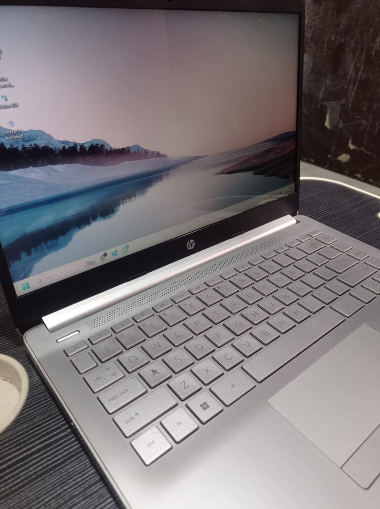

Laptop gaming spek dewa adalah pilihan tepat bagi gamer profesional. Di sini kamu akan menemukan rekomendasi laptop gaming terbaik 2025 dengan performa tinggi dan anti lag.
Gamer profesional membutuhkan laptop dengan prosesor dan GPU kelas atas untuk menjalankan game berat, multitasking streaming, dan turnamen online tanpa hambatan.
Pilih laptop dengan Intel i9 / Ryzen 9 dan GPU RTX 4070 ke atas.
Minimal RAM 16GB dan SSD NVMe 1TB untuk performa optimal.
Penting agar suhu tetap stabil saat bermain game berat atau melakukan streaming.
Idealnya 165Hz agar pengalaman visual lebih mulus dan responsif.
Q: Apakah laptop spek dewa bisa tahan lama?
A: Ya, dengan perawatan dan sistem pendingin yang baik, laptop gaming bisa bertahan hingga 5 tahun atau lebih.